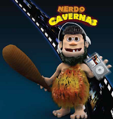

OBJETO VIRTUAL DE APRENDIZAJE PARA DISEÑOS DE SITIOS WEB (OVA) Nerdo Cavernas  Escuela de Ciencias Basicas, Tecnologia e Ingienieria (ECBTI) Personaje diseñado para el programa de ciencia y tecnologia de la Universidad Nacional Abierta y a Distancia (UNAD). Es un personaje Cavernicola que tiene un traje en piel de leopardo, baja estatura, caricaturesco, modelado en 3D, con cabello despeinado, barba, 2 dientes, ojos cafes, pies grandes y una gran barriga. Posee como accesorios un mazo de madera, vive en una caverna con implementos tecnologicos.